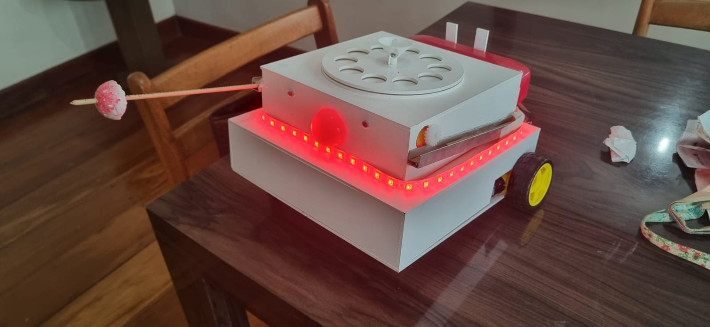

Montagem
Saiba mais sobre a montagem do projeto
Projeto Final
Veja o resultado final do Xispirito
Hardware
Censores e circuitos responsaveis pelo funcionamento
Pintura
Entenda sobre nosso processo de ideias

Armas
Descubra sobre o funcionamento da nossa arma
Xispirito

O Xispirito surgiu a partir da estrutura de um brinquedo clássico, o Chatter Telephone, visto no filme Toy Story, aliado à nossa criatividade. A ideia de criar um robô de batalha inspirado em um brinquedo antigo nos pareceu interessante, resultando no conceito do Xispirito: um robô de combate cuja estrutura remete à um brinquedo antigo. Essa combinação entre o design nostálgico e a funcionalidade moderna traz um toque único ao projeto, misturando a simplicidade dos brinquedos de antigamente com a sofisticação da robótica atua
Veja mais sobre o projeto


Armas
As armas do projeto consistem em "lanças" retráteis, equipadas com uma bola cheia de espinhos em suas extremidades superiores. Essas lanças são projetadas para serem ativadas por sensores, quando os sensores são acionados, as lanças se estendem rapidamente a partir das laterais do projeto, com o objetivo de atingir e perfurar o balão do adversário. Um LED de ativação estará localizado no "nariz" do projeto.
Hardware


Utilizamos motores DC com o driver de motor L293D, que permite o controle das rodas. O núcleo do sistema é um Arduino Mega 2560, que, em conjunto com o módulo Bluetooth HC-06, permite que os telefones celulares controlem o robô em todo o seu potencial. Os dois motores DC adicionais de 3V a 6V com eixo duplo acionarão as armas. Utilizaremos dois sensores microswitch KW11 com hastes de 56 milímetros para ativar as armas. Um LED vermelho cristalino de 3 mm (modelo TLHK-4200) estará conectado a um resistor de 4700 ohms no topo do robô. Usaremos uma fita de LED conectada a três resistores de 4700 ohms e três transistores BD135 para iluminar.
Responsáveis pelo Projeto
.jpeg)
Robocup
A Robocup é competição mais antiga da Fiap atinge todos os alunos dos primeiros anos de Sistemas de Informação. Seu principal objetivo é estourar o balão que o robô do adversário carrega. Para isso, todas as máquinas possuem armas em seu corpo. Elas podem ser variadas, alguns utilizaram agulhas e até mesmo um leque foi usado como arma. Mas a competição também exige o funcionamento pleno do robô: após estourar o balão do adversário, ele deve recolher sua a arma, só assim é considerado o vencedor do duelo.

NEXT
O NEXT é o programa de inovação da FIAP que incentiva alunos a transformarem ideias em soluções reais por meio de projetos práticos. Focado em empreendedorismo e tecnologia, o NEXT conecta os estudantes a desafios do mercado, permitindo o desenvolvimento de protótipos e soluções inovadoras. Além de proporcionar uma experiência imersiva, o programa oferece mentorias, workshops e oportunidades de networking com empresas e profissionais de destaque. Por meio do NEXT, os participantes podem aplicar seus conhecimentos em um ambiente colaborativo e preparar-se para os desafios da carreira tecnológica.
Videos
FAQ - Perguntas Frequentes
O App Inventor foi escolhido para desenvolver a interface de controle por ser uma plataforma intuitiva,
baseada em programação por blocos, facilitando a criação de aplicativos, especialmente para iniciantes.
Ideal para projetos com controle remoto, como o robô, permite comandos personalizados e integração
eficiente com Bluetooth.
A estrutura será feita de MDF para garantir resistência, enquanto os acessórios serão impressos em 3D. O
projeto terá quatro rodas: duas traseiras para impulsão e duas dianteiras para direção, visando melhor
distribuição de peso e estabilidade, evitando tombos.
Optamos por uma estética divertida inspirada no brinquedo Chatter Telephone para nos diferenciar dos
outros projetos, que geralmente focam em combate. Acreditamos que essa abordagem lúdica cria um
contraste interessante com a atmosfera do evento, tornando nosso projeto mais único e memorável.
O NEXT, que ocorrerá em 26 de outubro de 2024, será uma competição entre os projetos dos grupos.
Inspirado no formato de uma "luta de robôs", cada grupo enfrentará outro, utilizando seus projetos em
duelos. O vencedor de cada confronto avançará para a próxima rodada, seguindo esse formato até a rodada
final.
O projeto teve como proposta aplicar e expandir nossos conhecimentos ao longo do ano, permitindo que
colocássemos em prática o que aprendemos, buscássemos novas soluções e aprimorássemos nossas habilidades
técnicas e criativas, além de fortalecer o trabalho em equipe.